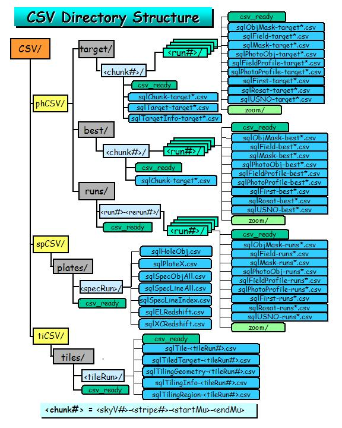

CSV Filenames, Formats
and Directory Structure
CSV Filenames, Formats
and Directory Structure
Directory Structure
The directory structure for the CSV files is as follows (see Figure 1 below):
-
CSV/ directory - the top of the directory tree for CSV files.
-
spCSV/ directory - contains the spectro CSV files. The files
that are written to this subdirectory are listed below, along with their
target tables:
-
plates/: The data directory containing the actual CSV files:
-
sqlPlate.csv - the data for the Plates table.
-
sqlSpecObj.csv - the data for the SpecObj (SpecObjAll) table.
-
sqlSpecLine.csv - the data for the SpecLine table.
-
sqlSpecLineIndex.csv - the data for the SpecLineIndex table.
-
sqlELRedshift.csv - the data for the ELRedshift (emission-line
redshifts) table.
-
sqlXCRedshift.csv - the data for the XCRedshift (cross-correlation
redshifts) table.
-
csv_ready | csv_queued: The csv_ready a semaphore file that
tells the robot that the spectro data is ready to load, i.e. the CSV files
are ready to be queued for loading. After the robot finishes queuing
them, it replaces this file with the csv_queued file indicating
that the files have been queued for loading.

Figure 1. The directory structure layout for the CSV files.

Ani R. Thakar
Last Modified: April 24, 2002.